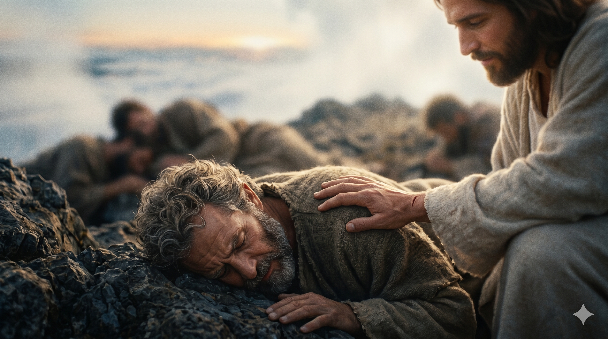

변화산 정상, 해같이 빛나신 한 분 곁의 모세와 엘리야, 그리고 엎드러진 세 제자.
엿새 후에 예수께서 베드로와 야고보와 그의 형제 요한을 데리시고 따로 높은 산에 올라가셨더니 그들 앞에서 변형되사 그 얼굴이 해 같이 빛나며 옷이 빛과 같이 희어졌더라. 그 때에 모세와 엘리야가 예수와 더불어 말하는 것이 그들에게 보이거늘 베드로가 예수께 여쭈어 이르되 주여 우리가 여기 있는 것이 좋사오니 만일 주께서 원하시면 내가 여기서 초막 셋을 짓되 하나는 주님을 위하여, 하나는 모세를 위하여, 하나는 엘리야를 위하여 하리이다. — 마태복음 17:1–4
엿새 전 가이사랴 빌립보에서 베드로는 "주는 그리스도시요 살아 계신 하나님의 아들이시니이다"라고 고백했습니다. 그러나 곧이어 예수께서 십자가의 길을 말씀하셨을 때 베드로는 "주여 그리 마옵소서" 하며 막아섰고, 주님께 "사탄아 내 뒤로 물러가라"는 무거운 책망을 들었습니다. 그 마음의 상처가 채 아물기도 전에, 주님은 베드로와 야고보와 요한을 따로 데리시고 높은 산에 오르십니다. 그곳에서 한 분의 얼굴이 해 같이 빛나고 옷이 빛처럼 희어지는 변형이 일어나며, 율법의 대표 모세와 선지자의 대표 엘리야가 나타나 주님과 더불어 예루살렘에서 별세하실 것을 말씀합니다.
하늘의 영광이 산 정상을 가득 덮은 그 거룩한 순간에, 베드로의 입에서 또 한 번 너무도 베드로다운 말이 흘러나옵니다. "주여 우리가 여기 있는 것이 좋사오니… 초막 셋을 짓되." 누가는 한 마디를 더합니다 — "자기가 하는 말을 자기도 알지 못하더라." 그가 보고 있는 것은 십자가로 가시기 전 잠시 보여주신 부활 후의 영광인데, 그는 그 영광을 한 자리에 묶어 머물게 하고 싶었습니다. 한 분과 모세와 엘리야를 동등한 세 초막에 모시려 한 것은, 한 분의 영광이 율법과 선지자보다 높음을 아직 깨닫지 못한 마음이었습니다. 곧이어 빛난 구름이 그들을 덮고 "이는 내 사랑하는 아들이요 내 기뻐하는 자니 너희는 그의 말을 들으라"는 음성이 임하자, 세 제자는 얼굴을 땅에 대고 엎드러지고 맙니다. 영광은 머물러 모실 대상이 아니라 따라 내려가야 할 길이었습니다.

땅에 엎드러진 베드로의 어깨에 부드럽게 얹힌 한 분의 손 — "일어나라 두려워하지 말라."
우리도 베드로처럼 하나님의 영광을 만난 자리에 '초막'을 짓고 싶어합니다. 뜨거운 수련회의 한 밤, 응답이 임한 한 새벽, 마음이 녹아내린 한 예배 — 그 한 자리에 머물러 살고 싶은 마음이 우리에게도 있습니다. 그러나 영광의 산은 머무르라고 보여주신 곳이 아니라, 그 빛을 가슴에 담고 다시 산 아래의 눈물 골짜기로 내려가라고 잠시 열어 주신 창문이었습니다. 변화산 바로 아래에는 귀신 들린 아이를 두고 절망한 한 아버지가 기다리고 있었습니다.
또 하나, 베드로의 말은 한 분을 모세·엘리야와 한 줄에 세우는 말이었습니다. 우리도 모르는 사이 주님을 다른 좋은 것들과 한 줄에 세울 때가 있습니다 — 가족, 사역, 교리, 좋아하는 영적 스승. 그러나 하늘에서 들려온 한 마디는 분명합니다. "이는 내 사랑하는 아들이요 너희는 그의 말을 들으라." 좋은 것들이 한 분을 가리지 않도록, 우리의 시선을 다시 한 분의 음성으로 좁혀가야 합니다.
영광은 머물러 모실 대상이 아니라, 가슴에 담고 산 아래로 내려가야 할 빛입니다.
당신의 변화산은 어디였습니까? 그곳에 초막을 짓고 머물러 있지 마십시오. 산 아래에서 한 아버지가 당신을 기다리고 있습니다.